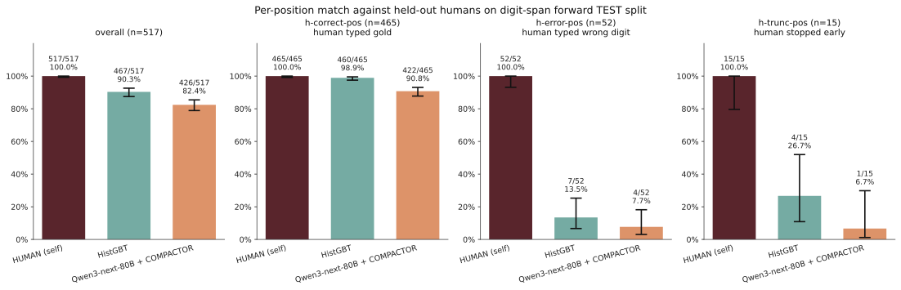

Can we reproduce specific human error modes with LM user simulators?
Research note.
What this is following up on
A team of researchers from NYU recently put out Simulating Human Memory with Language Models to investigate: can we get language models forget like people do? The abstract:
“Language models are increasingly being deployed as user simulators, but their memory is far more reliable than that of real users… we show that better prompting strategies and the use of a compactor can cause language models to forget content in a more human-like way. Using these methods, we show preliminary evidence that language models with human-like memory constraints can function as more effective user simulators in a downstream education task.”
They release ten classic memory tasks from psychology with human reference data plus the COMPACTOR architecture – an LM-with-memory-tool setup that imposes a small (4-slot) key-value memory budget, inspired by Cowan’s ~4-chunk working memory limit. With this in place they show, across tasks, that COMPACTOR-equipped frontier LMs match human aggregate accuracy much more closely than the same LMs without the constraint.
The natural next question, and the one this note pokes at: does aggregate accuracy on human behaviors translate to more granular behavioral match? That is, when a particular human makes a particular mistake under a particular set of circumstances, can an LM-based pipeline produce that same mistake? The aggregate metric is black-box with respect to this question, and downstream uses of these simulators (tutoring, error-pattern analysis, RL against a forgetful student) are likely to be affected by whether the simulator has more granular fidelity.
What the digit-span task is (ELI5)
Digit-span forward is a classic tool in cognitive psychology. The subject hears or reads a short sequence of digits – e.g. 3 7 1 9 4 – and is then asked to type them back in the same order. Of course, this task tends to get harder at longer sequence lengths. Real humans tend to fail in particular ways, like:
- truncation – stopping after the first few digits because they ran out of memory,
- substituting a similar nearby digit,
- losing order in the middle of the sequence (the “edge” digits survive, the middle ones might not).
Wang et al. (and the broader memory benchmarks they draw on) have 53 humans complete digit-span trials at varying lengths. The data we use throughout this note is their human keystroke output: for each trial we know the gold sequence the participant saw and the exact sequence they typed back.
What COMPACTOR is (ELI5)
COMPACTOR is the paper’s proposal for memory-constrained language models. A normal LM has effectively unlimited working memory on small inputs – it just attends back over the entire prompt. COMPACTOR wraps the LM in a key-value memory tool with a hard 4-slot budget. During an “encode” phase the model has to choose what to compress and store; during a “recall” phase it can only read from those 4 slots. The 4-slot number is the cognitive science anchor. Cowan, N. The magical number 4 in short-term memory: A reconsideration of mental storage capacity. Behavioral and Brain Sciences, 2001.
The empirical claim in the paper is, paraphrased: COMPACTOR-equipped LMs are much closer to humans on aggregate accuracy than the same LMs without the constraint, because the constraint forces them to drop information the way humans do. On digit-span their reported aggregate matches are tight – the closest model in the paper’s table sits within ~1pp of the human aggregate of 84.80%, which is remarkable at the aggregate level.
The narrow follow-on question
If we’re aiming to build a user simulator out of one of these memory-equipped LMs – say, a forgetful student for a tutor LM to practice against – the aggregate match is necessary but not sufficient. We also need the simulator to err in the same places a real human would, not just at the same overall rate. A simulator that scores 85% but with errors in entirely different positions than humans would train the tutor to handle the wrong failure modes.
So: on the same TEST trials, scored position-by-position against the held-out human’s actual keystrokes, how does the LM-based COMPACTOR pipeline compare to a baseline that uses no LM at all – just a gradient-boosted tree on hand-crafted features? We use Qwen3-next-80B-instruct as the model backend – it’s within ~6pp of human aggregate accuracy on the paper’s benchmark.
The hand-crafted tree is a useful comparison point because it has no notion of language or semantics. It just sees per-position features (digit identity, span length, where you are in the sequence, what you typed last). If it does well, the win isn’t architectural – it’s that position-level humanlike errors on this task have a lot of regular structure available cheaply.
Setup
Data
All inputs are human data from the paper’s reference repository (nickatomlin/simulating-memory@fefb178b), not seeded synthetic stimuli. 53 human runs from runs/human/working-memory-digit-span/, filtered to sequences of length 2–7 where humans actually err – this gives 592 (gold, human-typed) trial pairs.
Single 80/20 trial-level split, random.Random(42).shuffle: 473 TRAIN trials, 119 TEST trials. The TEST set has 517 positions total – 465 where the human typed the gold digit (call these h-correct), and 52 where they didn’t (call these h-error). Within the h-error subset, 15 are truncations – the participant stopped emitting digits before reaching the end. Everything below is evaluated on these 119 TEST trials.
Heuristic baseline
Per-position multiclass prediction of what the held-out human typed at each position (target: one of 11 classes – digits 0–9 plus a TRUNC class). 103 hand-crafted features per position, all derivable from the stimulus and the human’s own prior typed tokens during teacher-forced training: position index (raw, squared, normalized), span length, primacy and recency indicators, the current gold digit one-hot, the last three gold digits one-hot, peek at the next gold digit, the last three typed digits one-hot, error indicators for the last three positions, a truncation-so-far flag, and a small set of cross products. No participant ID. No external embedding. No language model.
Three models trained on the same 103 features:
HistGradientBoostingClassifier(max_iter=300, learning_rate=0.05, max_depth=6, l2_regularization=1.0, random_state=42)– the one we focus on.LogisticRegressionCVwith L2 (5-fold CV overC∈{0.001,0.01,0.1,1,10},max_iter=5000) – linear sanity check.RandomForestClassifier(n_estimators=500, min_samples_leaf=2)– nonlinear sanity check.
All evaluated greedily on TEST.
COMPACTOR baseline
We run the paper’s COMPACTOR pipeline exactly as released (key-value memory tool, encode-then-recall, MAX_KEYS=4, the published prompts and tool schema) on the same TEST gold sequences the held-out humans saw. Backend: qwen/qwen3-next-80b-a3b-instruct – reported by the paper at +5.87pp aggregate vs the human aggregate, full TEST denominator n=119. Temperature 0, unmodified pipeline from the reference repo, just pointed at human stimuli instead of seeded ones.
Validity check: the paper’s metric on this model (exact recall vs gold) reports 90.67% on their span 2–20 seeded stimuli. Computing the same metric on our TEST stimuli (spans 2–7, n=119) gives 87.39%. That ∼3pp gap is consistent with the change in span range and trial count – the pipeline replicates cleanly, the numbers in the table below come from the same machinery the paper used.
Metric
For each TEST position we have three labels: gold (the correct digit, derivable from the stimulus), human (what the held-out human actually typed, or TRUNC if they stopped before reaching it), and method (whatever the heuristic or COMPACTOR outputs at that position). Why none of these numbers appear in the paper’s tables. The paper reports exact-vs-gold – how often the model produces the correct digit sequence. We report match-vs-human – how often the model produces what a specific held-out human typed. The two metrics agree when the human got it right (which is the majority of trials), but diverge sharply when the human erred: exact-vs-gold gives the model credit for typing gold, while match-vs-human gives credit only for typing the same wrong digit the human typed. The first measures model accuracy. The second measures simulator fidelity to a specific person’s behavior. They’re different questions, and they give different numbers on the same data. The 87.39% validity-check number above is the only number in this note directly comparable to a number in the paper’s tables.
Four reported quantities:
- overall – fraction of positions where method == human.
- h-correct-pos – same, restricted to positions where the human typed gold (n=465).
- h-error-pos – same, restricted to positions where the human typed something other than gold (n=52).
- h-trunc-pos – subset of h-error where the human stopped early (n=15).
Confidence intervals are Wilson 95% on the underlying proportions. They’re wide because the h-error denominators are small (and that’s the main thing future work on more tasks could tighten).
Result

Full table on TEST, all methods on all four columns:
| Method | overall | h-correct-pos (n=465) | h-error-pos (n=52) | h-trunc-pos (n=15) |
|---|---|---|---|---|
| HUMAN (self) | 100.00% | 100.00% | 100.00% | 100.00% |
| HistGBT (heuristic) | 90.33% | 98.92% | 13.46% | 26.67% |
| LR (L2) | 90.72% | 100.00% | 7.69% | 13.33% |
| RandomForest | 90.52% | 100.00% | 5.77% | 20.00% |
| Qwen3-next-80B + COMPACTOR | 82.40% | 90.75% | 7.69% | 6.67% |
| always-predict-gold | 89.94% | 100.00% | 0.00% | 0.00% |
| random-digit (0–9) | 7.54% | 7.74% | 5.77% | 0.00% |
Two observations to read from this:
- The aggregate columns (overall, h-correct-pos) look broadly similar across HistGBT and Qwen3-next-80B + COMPACTOR – the heuristic edges out the published method by a few points but they’re close, consistent with the paper’s finding that COMPACTOR achieves aggregate match.
- The disagreement is most visible on the h-error and h-trunc columns, where the heuristic’s point estimate is meaningfully higher than COMPACTOR’s. Wilson 95% intervals overlap, so the magnitudes don’t survive strict inference; the ranking does, and it’s the same direction on both the digit-error and truncation subsets.
To frame it as the paper would: this is the gap between “forgets at the right rate” and “forgets in the right places.” The latter is what downstream user-simulator uses actually depend on.
What this suggests
For digit-span forward specifically, specific humanlike errors look like they have enough regular structure (recency, primacy, last-typed-digit, truncation-after-load) that a gradient-boosted tree on those features is a strong baseline – one a memory-constrained LM has to clear, not just match in aggregate. Neither our simple heuristic-driven baseline nor the LM-based COMPACTOR approach can comfortably find the error patterns in the data.
This reiterates what the paper’s preliminary user-simulator claim rests on: if the downstream is going to consume specific simulated responses (and tutor RL very much does), then granular behavior fidelity is crucial to track. Digit-span forward might not be one of them; richer tasks (variable-mapping, factual QA, narrative QA, semantic story recall) where errors are semantically structured rather than just memory-dropout are the natural next places to look, and places where CoT / reasoning tokens might actually better allow models to determine what errors should be made in particular scenarios. I'm looking forward to digging into some of those next! Of course, we’re still in early days – this note is one shape that my future work will likely build on: re-evaluate on a metric closer to the downstream use case, and use simple baselines to calibrate what the LM-based architecture is actually contributing.
References & artifacts
- Wang, Q., Tomlin, N., Hu, M., Dillon, B., Linzen, T. Simulating Human Memory with Language Models. 2026. Reference repo:
nickatomlin/simulating-memory@fefb178b. - Cowan, N. The magical number 4 in short-term memory: A reconsideration of mental storage capacity. Behavioral and Brain Sciences, 2001.
- Experiment code:
scandukuri/human-memory-sim @ audit-exploration. Heuristics:experiments/audit/predict_human_digit/. COMPACTOR-on-human-stimuli:experiments/audit/compactor_on_human_golds/.